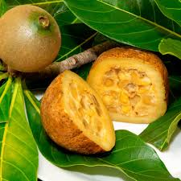
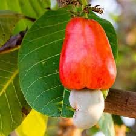
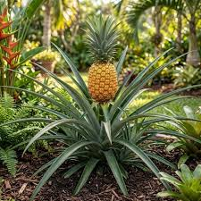
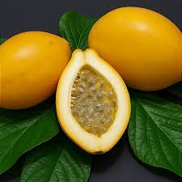
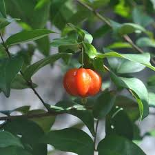

1º - Brasil
- Jabuticaba
- Açai
- Cupuaçu
- Pequi
- Umbu
- Uvaua
Sim, muitos países possuem frutas típicas apenas do seu país, assim como o Brasil, outros países são
ricos
em
frutos.
Dentre todos os países, o Brasil lidera o ranking com mais de 300 espécies, seguido de Colombia com 150
a
200 e
México com mais de 100 espécies.
Apesar de serem frutas típicas de cada país, as mesmas são possíceis de se encontrar devido a
importação.
1º - Brasil
2ºColômbia
| Classificação | Nome | Região | Ano de Descoberta | Foto |
|---|---|---|---|---|
| 1 | Jenipapo | Mata Atlântica, Amazônia e Cerrado | 1500 - Carta de P.V. Caminhada |  |
| 2 | Caju | Litoral do Nordeste e Cerrado | 1500-1550 |  |
| 3 | Abacaxi | Centro, Cerrado e Amazônia | 1500-1550 |  |
| 4 | Maracuja | Todo brasil | 1500-1550 |  |
| 5 | Pitana | Mata Atlântica | 1550 |  |